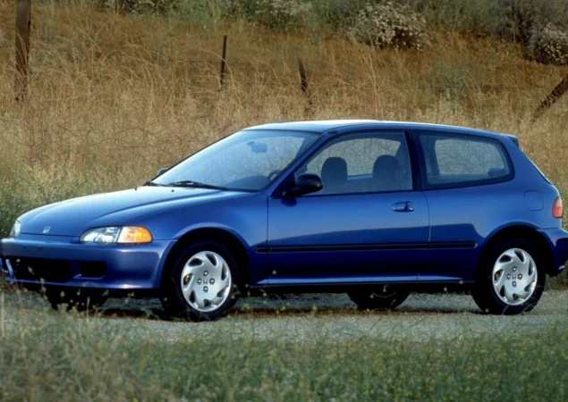

1° Geração
- Lançado em 1984 com a versão Civic CRX Si nos EUA e hatch no Japão.
- Motor 1.5L SOHC com injeção eletrônica (PGM-FI) — cerca de 91 cv.
- Leve, ágil e voltado para desempenho urbano esportivo.
2° Geração
- Lançado em 1986, com motor 1.5L atualizado e cerca de 105 cv.
- Suspensão traseira independente e melhor refinamento geral.
- Design mais moderno, mantendo o foco em leveza e diversão.
3° Geração
- Lançado em 1989 com motor 1.6L DOHC VTEC (ZC e D16A6).
- Si se destaca com suspensão refinada e comportamento esportivo.
- Base forte para o início da cultura de modificações nos anos 90.
4° Geração
- Lançado em 1992 com motor D16Z6 VTEC (SOHC) de até 125 cv.
- Chassi leve e ágil, carroceria EG6 é cultuada até hoje.
- Um dos modelos mais queridos por entusiastas da Honda.
5° Geração
- Introduzido em 1999 com carroceria EM1 coupé nos EUA.
- Motor B16A2 DOHC VTEC com 160 cv e câmbio manual curto.
- Desempenho puro aliado a um visual limpo e esportivo.
6° Geração
- Lançado em 2006 com motor K20Z3 DOHC VTEC — 197 cv.
- Versão coupé e sedã disponíveis nos EUA e no Brasil.
- Design agressivo, câmbio manual de 6 marchas e embreagem curta.
7° Geração
- Lançado em 2012 com motor 2.4L i-VTEC (K24Z7) — 201 cv.
- Mais torque, porém rotações mais baixas que o K20.
- Design mais conservador, mas ainda com foco em desempenho.
8° Geração
- Lançado em 2017, com motor 1.5 turbo (L15B7) de 208 cv.
- Primeiro Si com turbo de fábrica e torque em baixa rotação.
- Coupé e sedã com visual moderno e excelente equilíbrio dinâmico.
9° Geração
- Lançado em 2022, baseado na 11ª geração do Civic tradicional.
- Motor 1.5L turbo atualizado com 200 cv e torque otimizado.
- Disponível apenas como sedã, com câmbio manual de 6 marchas.
- Visual mais sóbrio e refinado, mas com dinâmica esportiva aprimorada.